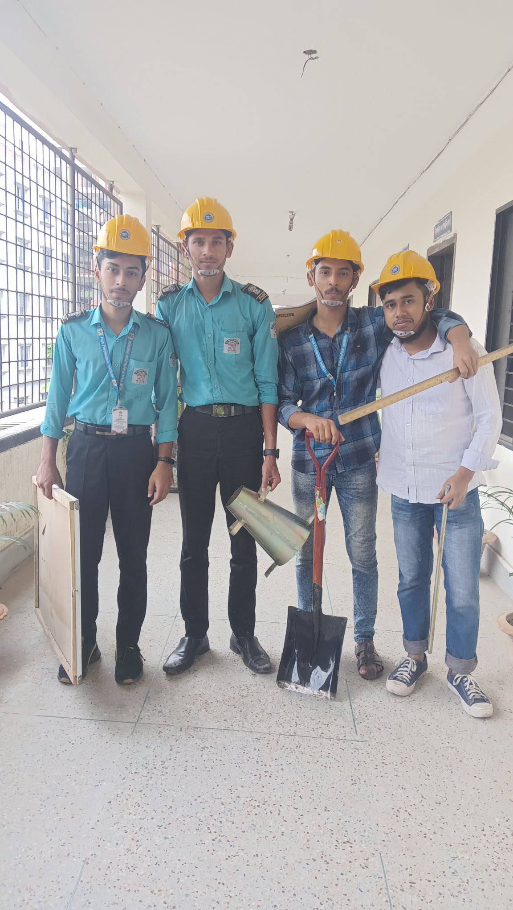
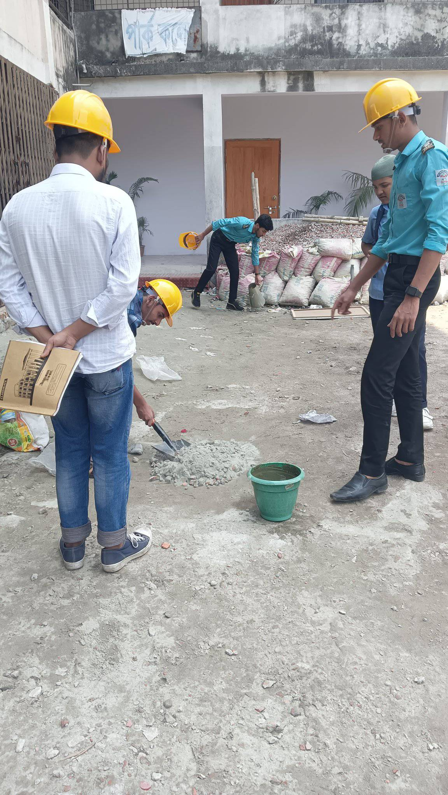

Civil Engineering


সিভিল ইঞ্জিনিয়ারিং কী ?
সিভিল ইঞ্জিনিয়ারিং প্রযুক্তি বিদ্যার এমন একটি শাখা যার চাহিদা বিশ্বজুরে !
এবং তা কখন ও কমবে না ।সরকারি ও বেসরকারি ক্ষেত্রে নিমাণ গত নানা রকম পরিকল্পনা নকশা প্রকৌশল নিধারণ এবং
নির্মিত পরিকাঠামো গুলির রক্ষণাবেক্ষণের দায়িত্বে থাকে সিভিল ইঞ্জিনিয়াররা।
যারা এই বিষয়ে নিজেদের ক্যারিয়ার গড়তে চান তাদেঁর জন্য এখানে বিস্তারিত তথ্য আলোচনা করা হলো:
**** সিভিল ইঞ্জিনিয়াররা বিভিন্ন গণপরিবহণ ব্যবস্থা রাস্তা, সেতু, বাড়ি, এয়ারর্পোট ,বাঁধ ,জল সরবরাহ ব্যবস্থা
ইত্যাদি পরিকল্পনা নিমাণ ও পরিকল্পনার দায়িত্বে থাকেন। তাদের কাজ হলো:
১. সরকারি ও বেসরকারি পরিকাঠামো নিমাণ রক্ষণাবেক্ষণ করা ।
২.র্দীঘমেয়াদি পরিকল্পনা গুলোকে বিশ্লেষণী দৃষ্টিভঙ্গিতে বিচার করা ।
৩.সার্ভে রির্পোট ,ম্যাপ ,ও অন্যান্য তথ্য ঘেটে গ্রাহকের চাহিদা অনুযায়ী কোনও প্রকল্প প্রস্তুত করা।
৪.ডিজাইন , নকশা ও পরিকল্পনা করা।
৫.নির্মাণ কাজের ব্যয় ও ক্ষয়ক্ষতির হিসাব ।
৬.মাটি ও নির্মাণ সামগ্রী পরিক্ষা করা।
ডিপ্লোমার জন্য যোগ্যতা :
যারা দশম শ্রেণিতে ইংরেজি ,বিজ্ঞান ও গণিত সহযোগে ন্যূনতম শতকরা ৪৫ শতাংশ নম্বার নিয়ে পাশ করে তারা এই বিষয়ে
ডিপ্লোমা র্কোস করতে পারে ।
প্রয়োজনীয় দক্ষতা / গুণাবলি :
১.গণিত বিষয়ে দক্ষতা
২.টেকনিক্যাল বিষয়ে দক্ষতা
৩.বিশ্লেষণী ও সমালোচনা মূলক চিন্তাধারা
৪. সমস্যা সমাধানের দক্ষতা
৫.খুঁটিয়ে দেখার দক্ষতা
৬. সময়ের যথাযত ব্যবহার
৭.দলগত ভাবে কাজ করতে পারার ক্ষমতা
৮.পরিকল্পনা করার ও কল্পনা করার ক্ষমতা
৯.জ্ঞান আহরনের ইচ্ছা ।
সিভিল ইঞ্জিনিয়ারের প্রকারভেদ :
১.স্ট্রাকচারাল ইঞ্জিনিয়ার
২.এনভায়রণমেন্টাল ইঞ্জিনিয়ারিং
৩.ট্রান্সর্পোটেশন ইঞ্জিনিয়ারিং
৪.ওয়াটার রির্সোস ইঞ্জিনিয়ারিং
৫.জিওটেকনিক্যাল ইঞ্জিনিয়ারিং
৬.র্সাভে ইঞ্জিনিয়ার
উল্লেখযোগ্য সরকারি চাকরির ক্ষেত্র গুলো হলো :
1.WASA
2.BWDB
3.BADC
4.RAJUK
5.BBA
6.BPDB
7.IRRB
8.CAAB
9.DESCO
10.DNCC & Etc.
এছাড়াও রয়েছে সুনামধন্য বিভিন্ন বেসরকারি কোম্পানি ।
****বি:দ্র: আমরা অনেকে মনে করি সিভিল ইঞ্জিনিয়ারিং শুধু মাত্র ছেলেরাই পড়ে !****
বাস্তবে তা কিন্তু নয়। এটি আমাদের ভুল ধারণা।
এ সেক্টরে মেয়েরাও তাদের ক্যারিয়ার গড়তে পারে ।